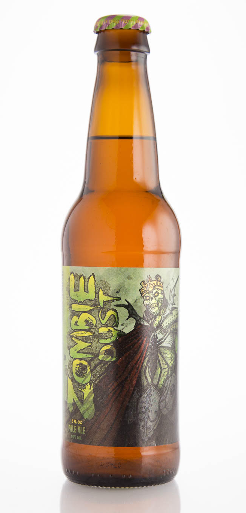

Aroma: “Some wonderful fruit notes of blackberry, peach, fresh blueberry, mango,
and pineapple balanced against light onion notes and an almost white-wine character.
Very resinous, catty and fruity offset with a dank and grassy earth character.”
Flavor: “Hops present complex fruit notes with a little more citrus character.
The onion notes are there too, but not overpowering and provide depth and contrast.
Drinks super clean and malt and hops are in balance. Juicy hops flavors up front,
reminiscent of grapefruit and pine, along with tropical fruit notes and an appropriate
level of bitterness. Finishes dry and clean.”
Overall: “A very creative beer with a unique, beautiful, and delicious hops profile.
Nice dry, balanced base beer with enough malt backbone to support but not crowd the hops,
interesting hops profile that showcases both piney, resinous, dank flavors with classic
American citrus notes and tropical fruit hops flavors, and a very clean fermentation profile
to boot. Extremely drinkable thanks to lower bitterness but no doubt about it, the hops are
the belle of the ball. Buy by the case—it’s an excellent example of the style.”